综合测评成绩 Top 前8%
必修成绩 Top 前12%
中共党员
CET-4/6
国家级、校级科研经历
一作论文发表(SCI/JCR Q2)
三作论文发表(SCI/JCR Q1)
获奖校级及以上荣誉
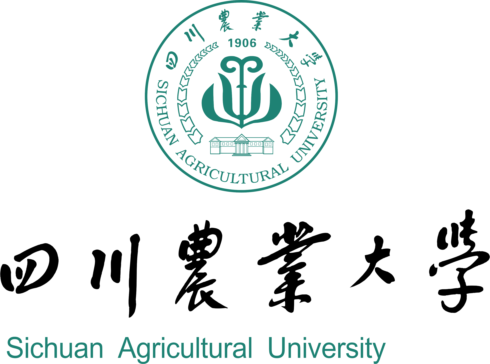
Scroll Down
大学三年，我的综合素质全面发展，目前综合测评成绩91.47分（2024-2025），专业排名10/125（前8%），算术平均成绩90.36分，专业排名15/125（前12%）。本科阶段在大学英语（96分），经济学原理（95分），工程经济学（94分），高等数学（92分）等课程中取得了较好的成绩，因为表现突出，我曾多次获得国家励志奖学金（2024、2025）、校级“优秀学生（2024、2025）”、“优秀共青团员（2024）”等奖项及荣誉。我热心助人、积极乐观，目前担任工程造价学生党支部组织委员。此外，我已顺利通过英语四六级（504、433）、计算机二级考试（MS Office），并熟练掌握Matlab、Origin、Mathematica等科研工具，具备一定的数据分析与学术写作能力。
在科研方面，自大一下暑期起我开始准备并顺利加入我院李星苇教授的课题组（城乡建设领域能源与环境管理课题组），我主要围绕建筑与拆除废弃物（CDW）资源化、绿色供应链及城乡建设领域能源与环境管理开展研究。目前已以第一独立作者身份在《Buildings》发表SCI论文(JCR Q2)1篇，以第三合著作者身份在《Systems》发表SCI论文(JCR Q1)1篇，以第五合著作者身份向《Journal of Asian Architecture and Building Engineering》投稿1篇（JCR Q1，在审）。同时，以主要参与者身份参与2项校级科研项目（已结题1项），1项国家级大创项目（已通过校级认定）。在研究过程中，我系统掌握了Stackelberg博弈建模、敏感性分析及数值仿真方法，能够熟练使用软件开展模型求解与结果分析。本科期间发表和在审的三篇论文及科研项目经历均围绕建筑废弃物资源化供应链展开，研究主题涉及政府补贴、企业信息谎报、社会信任等因素对回收决策的影响。
本科期间的科研经历使我初步掌握了相关研究方法，也培养了独立思考和开展学术研究的兴趣。我希望能够在已有研究基础上进一步深化相关理论与方法学习，并在老师的指导下开展更具现实意义和学术价值的研究工作。若有幸进入您的课题组学习，我希望能够在您的指导下接受更加系统的科研训练，进一步提升学术素养和科研能力，并努力在相关领域开展更深入的研究工作。未来，我希望继续围绕建筑废弃物资源化与绿色供应链管理领域开展深入研究，并不断提升自身科研能力。
Three Projects
主要参与人
在研
负责农村建筑垃圾资源化领域文献梳理与研究现状分析， 参与农户—企业多主体Stackelberg核心博弈模型构建及技术路线设计， 完成项目申报书文献综述、引言等核心内容撰写。
主要参与人
已结题
负责关键参数识别、核心模型求解与仿真分析， 利用Mathematica和Origin完成研究验证与成果展示。
主要参与人
在研
参与项目选题与实证分析，搭建核心研究框架， 开展数值仿真与敏感性分析，撰写文献综述与研究方法。
SCI outcomes
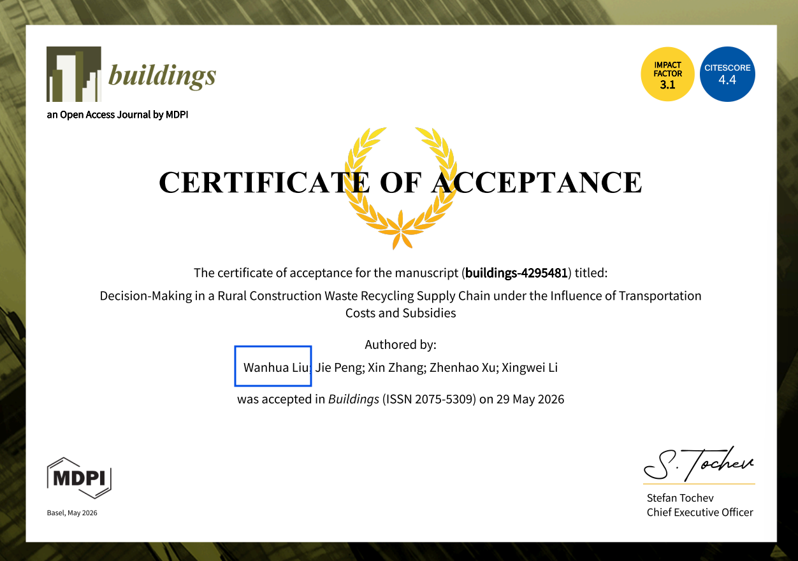
SCI · JCR Q2
独立第一作者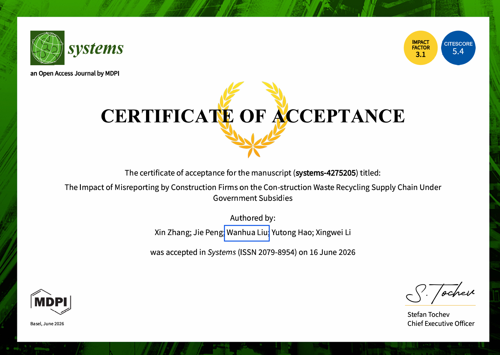
SCI · JCR Q1
合著第三作者SCI · JCR Q2 · First Author
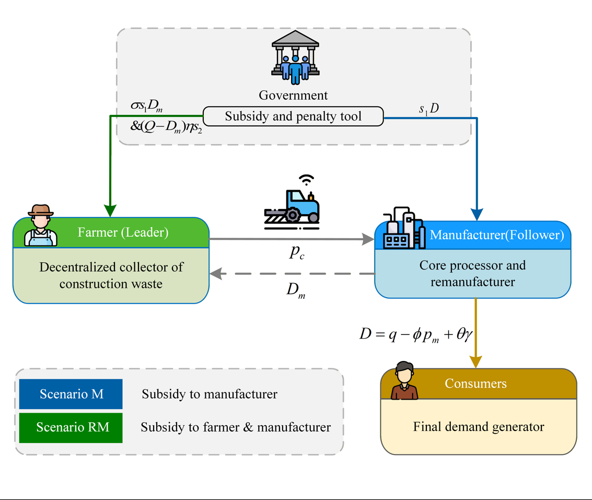
Research Framework
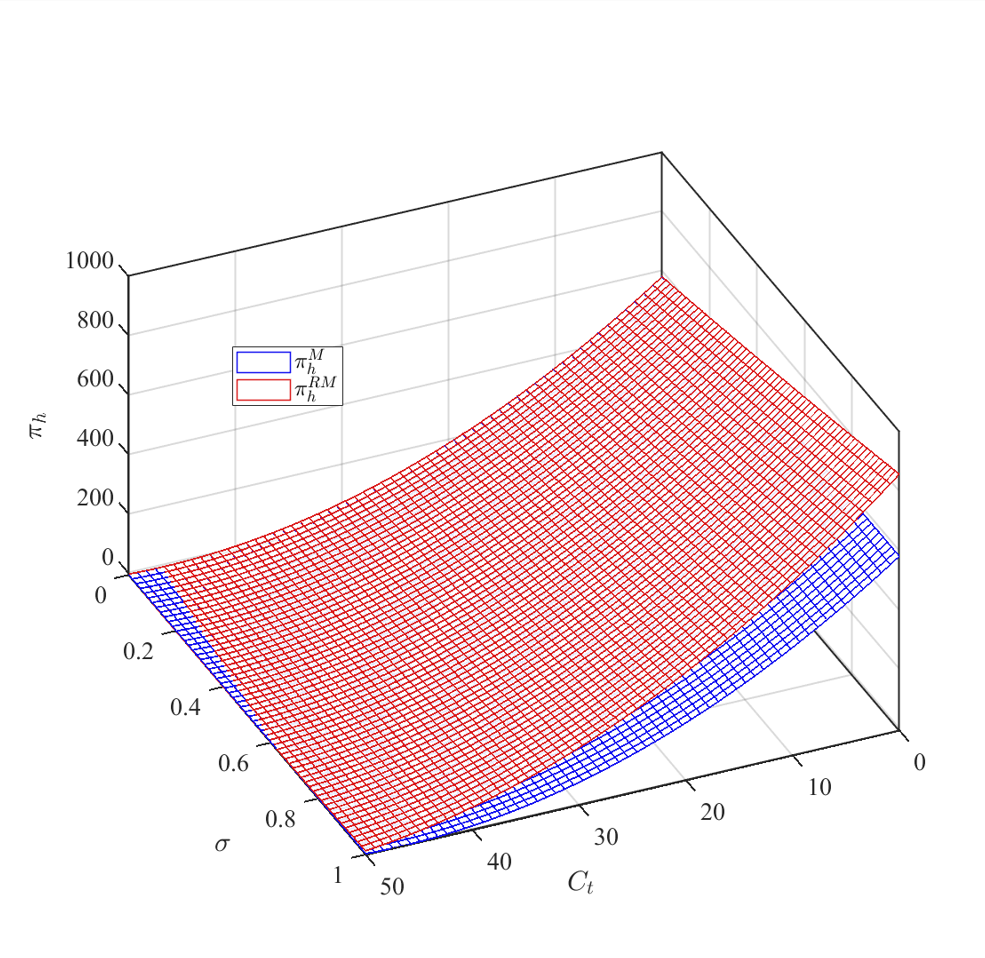
Comparison Analysis
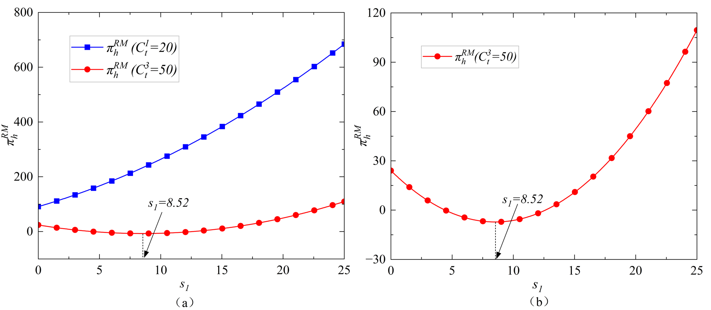
Profit Analysis
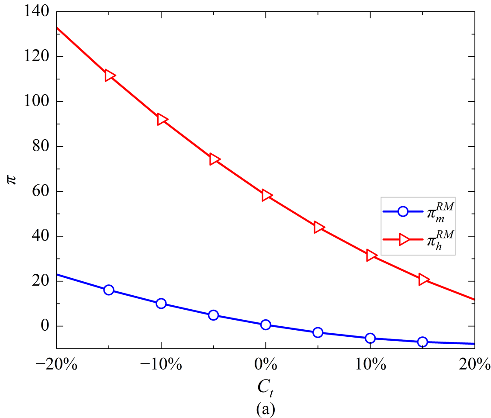
Sensitivity Analysis I
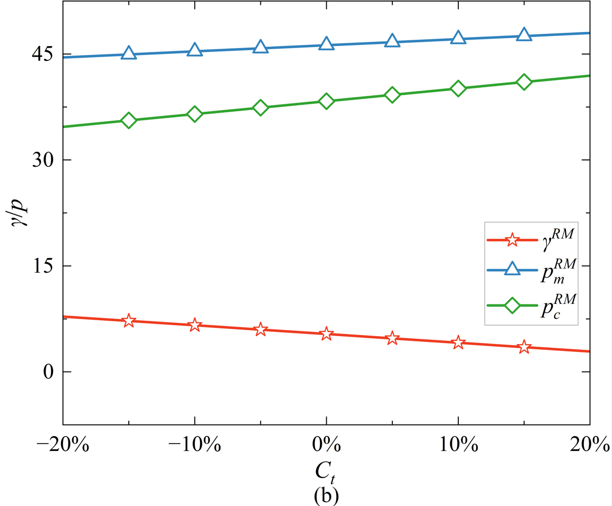
Sensitivity Analysis II
SCI · JCR Q1 · Third Author
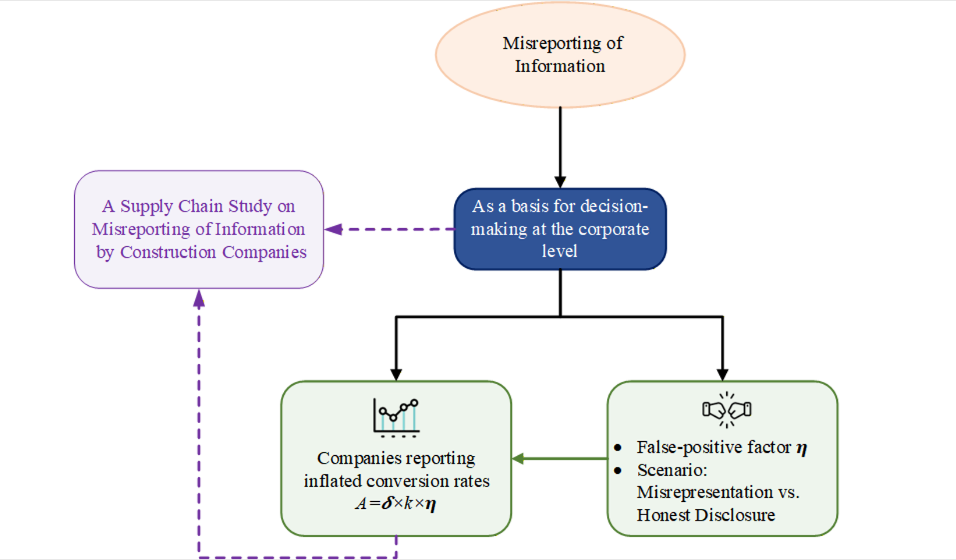
Theoretical Basis
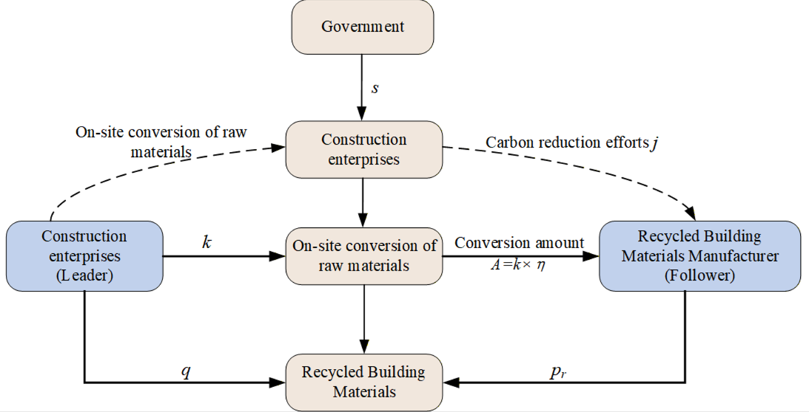
Research Framework
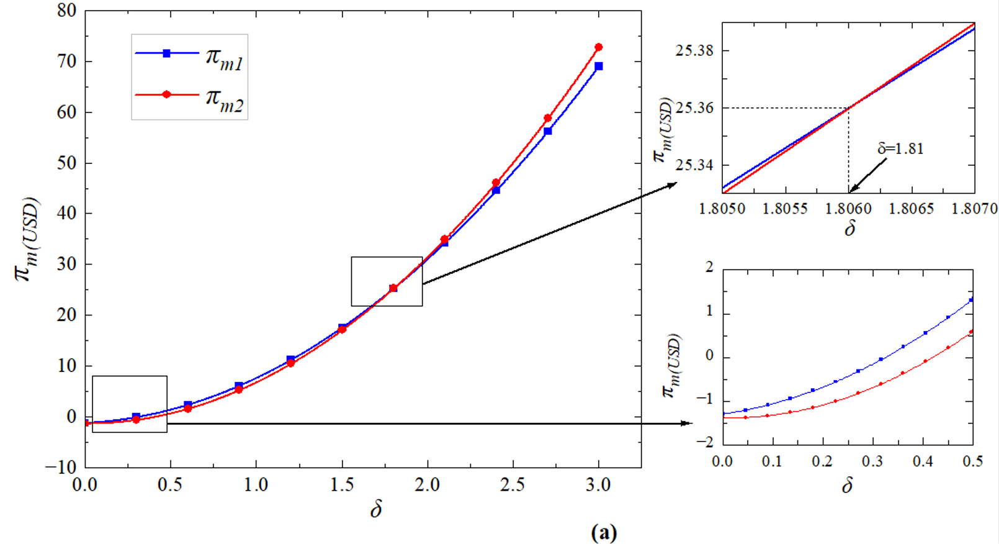
Comparison Analysis
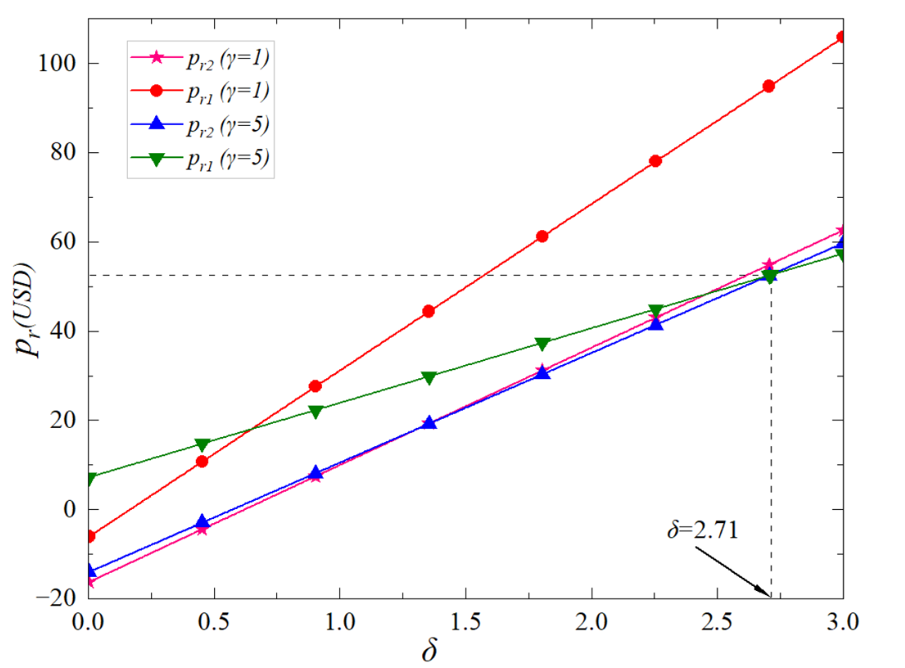
Simulation Analysis
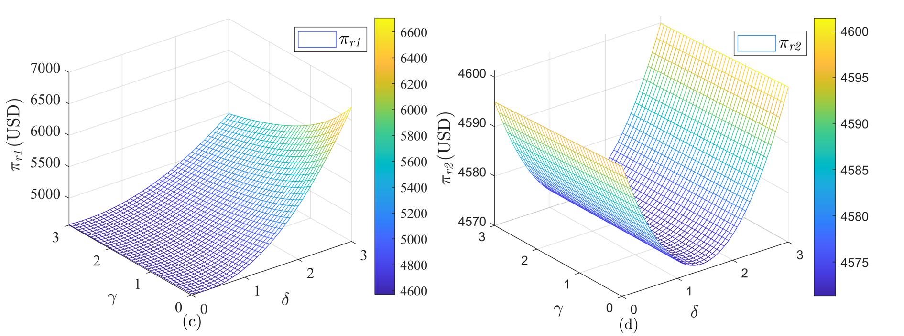
3D Surface